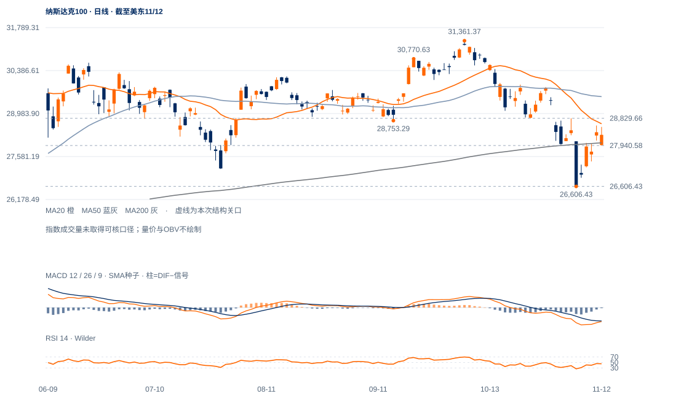

反弹只收复部分原跌波
10月6日31361.37至11月5日26606.43的价差为4754.94点，现价28289.19只回收约35.4%。完整趋势反转所需的较高低点与突破旧中峰尚未齐备。
未来1—5日偏向重心反复，28289上方仍有密集压力；重夺28830前维持修复候选。1—3周仍需尊重完整周线调整背景。

查看大图 ↗10月6日31361.37至11月5日26606.43的价差为4754.94点，现价28289.19只回收约35.4%。完整趋势反转所需的较高低点与突破旧中峰尚未齐备。
现价在200日线28029.04上方，但低于20日28650.51；截至11月6日完整周收26989.99，低于10/30周均线29437.59/29167.19。当前未完成周的反弹不能提前当成周线反转。
英伟达重新失守170.24、微软未收回531.22，苹果仍在突破过滤中，特斯拉已完成自身修复条件。该分化支持选择性修复，不能把个别强股当整个指数确认。
从26606.43低点的反弹幅度已有6.3%左右，200日线得到收盘回收；若28829.66上方连续保持，当前调整背景应上调为更强修复。